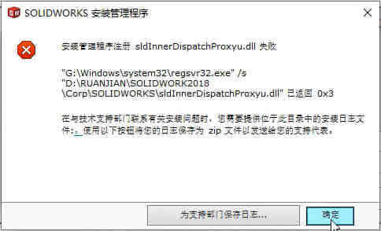

缺少运行库组件
原因：电脑系统环境缺少组件。提示：
Register_DocMgrDLL.A48C1CF2_EBF8_48E8_ACAD_68CA04F776A2
方法
是电脑缺少组件问题（Microsoft® Visual C++ 2015 Redistributable）。装回组件解决。
补充一点：该问题存在 2015 和 2017 组件是不能共存。建议是直接安装 2015-2019 的集合包，#访问下载位置
.dll注册失败
sldInnerDispatchProxyu.dll注册失败，或是ColorBarAX.ocx 失败。已返回 0x5

方法
此类问题还请检查下是否存在【加密】或【杀毒】等软件，阻碍了安装组件注册的进行。例如：关闭360安全卫士等，
有时候退出360还不行的，后台还有一个主动防御的进程。可以把360先卸载，装完SW后再装回去
Runtime安装失败
Runtime组件是MSEdgeWebView2
1 | ..\SOLIDWORKS安装包\PreReqs\MSEdgeWebView2 |